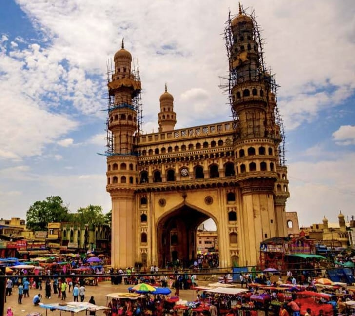
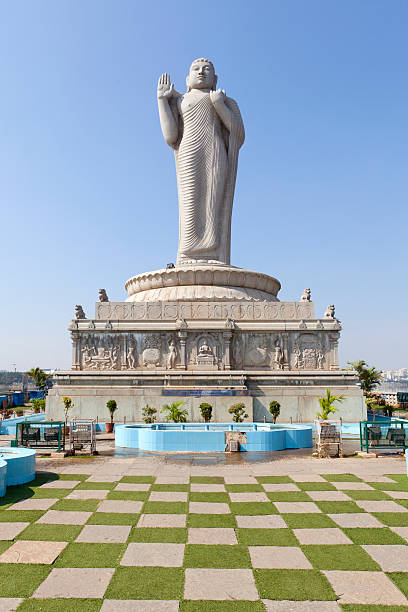
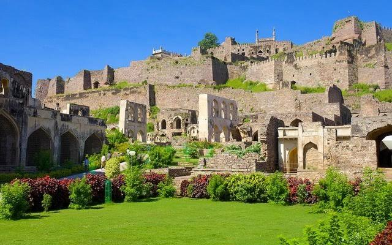
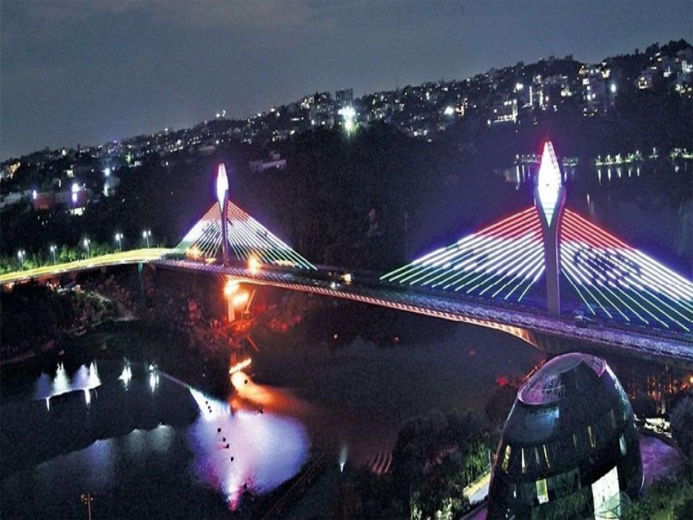

Hyderabad Tourism
Hyderabad is Telangana's largest and most-populous city and is the major urban centre for all of south-central interior India. From 1956 to 2014 Hyderabad was the capital of Andhra Pradesh state, but, with the creation of Telangana from Andhra Pradesh in 2014, it was redesignated as the capital of both states
Images
   The city of Hyderabad was founded by the Qutb Shahi sultan Muhammad Quli Qutb Shah in 1591 CE. It was built around the Charminar, which formed the centerpiece of the city. Hyderabad became an important trading centre for diamonds and pearls, and a centre for culture.